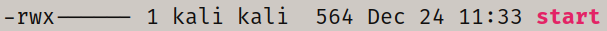

--------------------------------------------------------------------------------------
the file seems to be a buffer overflow exploit, it displays a messege and takes input.

we are able to overwrite the IP and seems there are no canaries

disassembling and further examin:
there are no precautions at all, making it simpler

at the symbol table we see _start enrty point, and _exit
(there's no main() function, _start is main() caller, its an early low-level initialization, futrther read)
in the disassembly we see:

(+0) esp address is pushed onto the stack (we'll get back to it)
(+1) a return address to _exit is pushed onto the stack
(+6 to +34) register zeroing and pushing a string (little endian representation of "Lets start the CTF:")
(+32) pointer to the string is pushed to ecx
further, there are are some register value setting and 2 int 0x80
the int 0x80 is interrupt call to 0x80 interrupt number, which handler is the kernel, to invoke a system call, it takes the value in eax as the program to run and values in the other registers as parameters by order, eg B, C, D... (futher read)
/usr/include/asm/unistd_32.h path to syscall argument number table
(with <gcc -m32> the m32 defines __i386, so /usr/include/asm/unistd.h includes <asm/unistd_32.h>)
so the first interrupt (eax = 4) is write(int fd, *buffer, size ), ebx being the file descriptor stdout, ecx is the pointer to the buffer (<+39> the address of esp is pushed to ecx), and edx is being the size of 0x14 - 20 bytes long.
this interrupt will read 20 bytes of the address pointed by ecx to stdout (Lets start the CTF:)
second interrupt is for read(int fd, *bufer, size), taking user input from stdin and writing it to the stack.
afterwards (<+57>) the program returns to _exit and quits the program with interrupt to exit()

so summing it up, program starts, takes an input and writes it to the stack, than exits.
seeing that we may overwrite esp, we can try and alter execution order.
trying to overflow the program, we see that we have control over esp at an offset of 20 bytes
also we see the original SP that was pushed onto the at <+0>

(*ASLR disabled)
as we have an SP address on the stack, we may try and insert a shellcode onto the stack, return orient to that address and execute that code.
but first we need to leak that ESP.
looking at the disassembly again we see that if we redirect to _start +39, where the next ESP value the stack address pushed at <+0>.
this address is can be leaked by printing it to stdout.

so our first payload is in order to leak a stack address is:
(b"A"*20 + b"\x87\x80\x04\x08")
after redirecting, we capture the leaked stack address, and get ready to send another payload.
this time, the payload will contain 20 bytes of spacing as before, the leaked SP + 20 bytes and our shellcode.
(its SP+20 casue of add 0x14, at 20 byte offset is where we will place our shellcode)
the shellcode i will insert will invoke a syscall to execve to spawn an sh shell.
so now that we know the route of our solution. we may write a script for the exploit and run it.

running the exploit, we get a shell

externals:
in x86-32 parameters for Linux system call are passed using registers. %eax for syscall_number. %ebx, %ecx, %edx, %esi, %edi, %ebp are used for passing 6 parameters to system calls.
The return value is in %eax. All other registers (including EFLAGS) are preserved across the int $0x80.
The Definitive Guide to Linux System Calls